Load the required packages for this analysis:
library(sfcr)
library(tidyverse)
#> ── Attaching packages ─────────────────────────────────────── tidyverse 1.3.0 ──
#> ✔ ggplot2 3.3.2 ✔ purrr 0.3.4
#> ✔ tibble 3.0.4 ✔ dplyr 1.0.2
#> ✔ tidyr 1.1.2 ✔ stringr 1.4.0
#> ✔ readr 1.4.0 ✔ forcats 0.5.0
#> ── Conflicts ────────────────────────────────────────── tidyverse_conflicts() ──
#> ✖ dplyr::filter() masks stats::filter()
#> ✖ dplyr::lag() masks stats::lag()
bmw_eqs <- sfcr_set(
# Basic behavioral equations
Cs ~ Cd,
Is ~ Id,
Ns ~ Nd,
Ls ~ Ls[-1] + Ld - Ld[-1],
# Transactions of the firms
Y ~ Cs + Is,
WBd ~ Y - rl[-1] * Ld[-1] - AF,
AF ~ delta * K[-1],
Ld ~ Ld[-1] + Id - AF,
# Transactions of households
YD ~ WBs + rm[-1] * Mh[-1],
Mh ~ Mh[-1] + YD - Cd,
# Transactions of the banks
Ms ~ Ms[-1] + Ls - Ls[-1],
rm ~ rl,
# The wage bill
WBs ~ W * Ns,
Nd ~ Y / pr,
W ~ WBd / Nd,
# Household behavior
Cd ~ alpha0 + alpha1 * YD + alpha2 * Mh[-1],
# The investment behavior
K ~ K[-1] + Id - DA,
DA ~ delta * K[-1],
KT ~ kappa * Y[-1],
Id ~ gamma * (KT - K[-1]) + DA
)
bmw_external <- sfcr_set(
rl ~ 0.025,
alpha0 ~ 20,
alpha1 ~ 0.75,
alpha2 ~ 0.10,
delta ~ 0.10,
gamma ~ 0.15,
kappa ~ 1,
pr ~ 1
)This model is tricky. The “Broyden” does not converge to a sensible answer if we don’t set the initial values of the following variables to reasonably large values (as the ones below). Interestingly, the other two solvers (“Gauss” and “Newton”) succeed in arriving to a sensible steady state without setting the initial values:
bmw_initial <- sfcr_set(
Ns ~ 128, # Needs to be set
Ls ~ 12, # Needs to be set
Y ~ 128, # Needs to be set
Ld ~ 12, # Needs to be set
Mh ~ 12, # Needs to be set
Ms ~ 12, # Needs to be set
Nd ~ 128, # Needs to be set
)
bmw <- sfcr_baseline(bmw_eqs, bmw_external, periods = 100, initial = bmw_initial, method = "Broyden", hidden = c("Ms" = "Mh"))
bmw <- sfcr_baseline(bmw_eqs, bmw_external, periods = 100, method = "Newton", hidden = c("Ms" = "Mh"))Let’s check the internal structure of this model with the sfcr_dag_blocks_plot() function:
sfcr_dag_blocks_plot(bmw_eqs)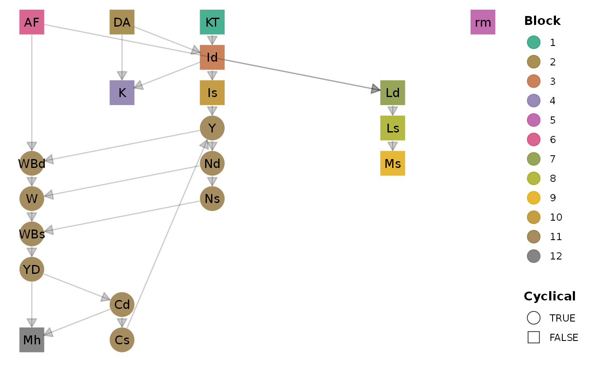
First, let’s check that the model arrived to a steady state income level:
bmw %>%
pivot_longer(cols = -period) %>%
filter(name == "Y") %>%
ggplot(aes(x = period, y = value)) +
geom_line() +
labs(title = "Steady state GDP")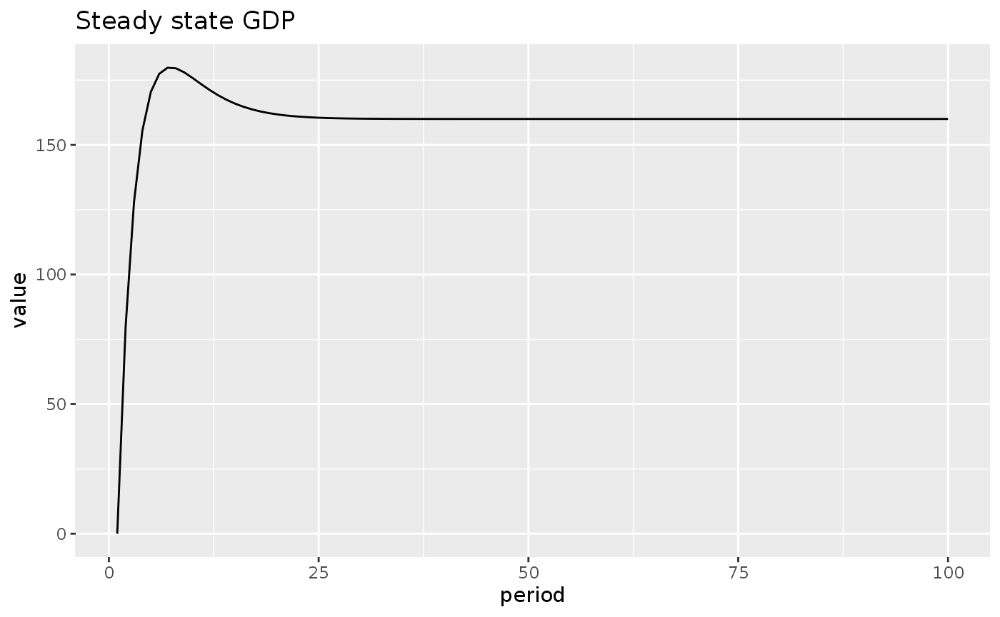
bs_bmw <- sfcr_matrix(
columns = c("Households", "Firms", "Banks", "Sum"),
codes = c("h", "f", "b", "s"),
c("Money", h = "+Mh", b = "-Ms"),
c("Loans", f = "-Ld", b = "+Ls"),
c("Fixed capital", f = "+K", s = "+K"),
c("Balance", h = "-Mh", s = "-Mh")
)Validate:
sfcr_validate(bs_bmw, bmw, "bs")
#> Water tight! The balance-sheet matrix is consistent with the simulated model.
tfm_bmw <- sfcr_matrix(
columns = c("Households", "Firms_current", "Firms_capital", "Banks_current", "Banks_capital"),
codes = c("h", "fc", "fk", "bc", "bk"),
c("Consumption", h ="-Cs", fc = "+Cd"),
c("Investment", fc = "+Is", fk = "-Id"),
c("Wages", h = "+WBs", fc = "-WBd"),
c("Depreciation", fc = "-AF", fk = "+AF"),
c("Interest loans", fc = "-rl[-1] * Ld[-1]", bc = "+rl[-1] * Ls[-1]"),
c("Interest on deposits", h = "+rm[-1] * Mh[-1]", bc = "-rm[-1] * Ms[-1]"),
c("Ch. loans", fk = "+d(Ld)", bk = "-d(Ls)"),
c("Ch. deposits", h = "-d(Mh)", bk = "+d(Ms)")
)
sfcr_validate(tfm_bmw, bmw, "tfm")
#> Water tight! The transactions-flow matrix is consistent with the simulated model.Now we add some shocks to this model to see how it behaves in different scenarios.
First, let’s write a helper function to convert the models to the long format, filter the variables we want to plot, and make a line plot:
do_plot <- function(model, variables, title = NULL) {
model %>%
mutate(YK = Y / lag(K)) %>%
pivot_longer(cols = -period) %>%
filter(name %in% variables) %>%
ggplot(aes(x = period, y = value)) +
geom_line(aes(linetype = name)) +
labs(title = title)
}We then write the shock we want to add and simulate the new scenario:
shock1 <- sfcr_shock(
variables = sfcr_set(
alpha0 ~ 30
),
start = 5,
end = 60
)
bmw1 <- sfcr_scenario(bmw,
scenario = shock1,
periods = 60)How the consumption of households and their disposable income evolves?
bmw1 %>%
do_plot(variables = c("Cd", "YD"),
title = "BMW1: Evolution of consumption and disposable income")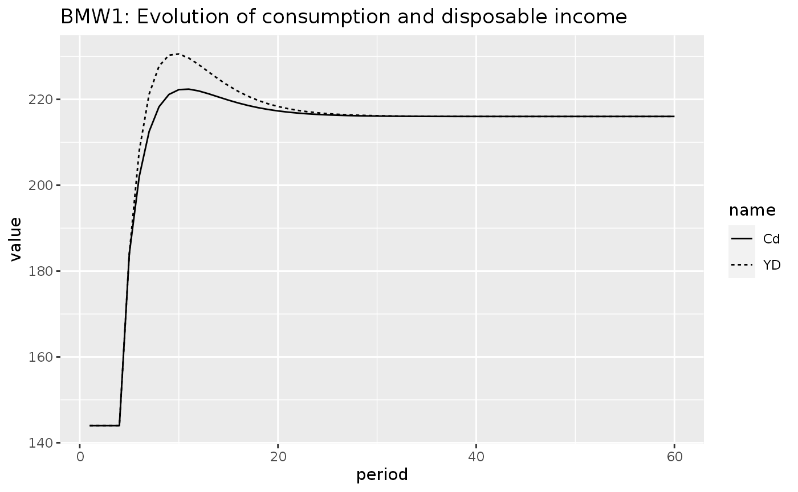
And the investment of firms?
bmw1 %>%
do_plot(variables = c("Id", "AF"),
title = "BMW1: Investment of firms")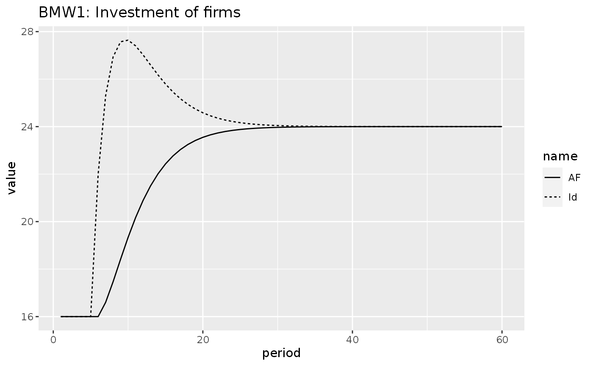
shock2 <- sfcr_shock(
variables = sfcr_set(
alpha1 ~ 0.7
),
start = 5,
end = 60
)
bmw2 <- sfcr_scenario(bmw,
scenario = shock2,
periods = 60)
bmw2 %>%
do_plot(variables = c("Cd", "YD"), title = "BMW2: Decrease in the propensity to save")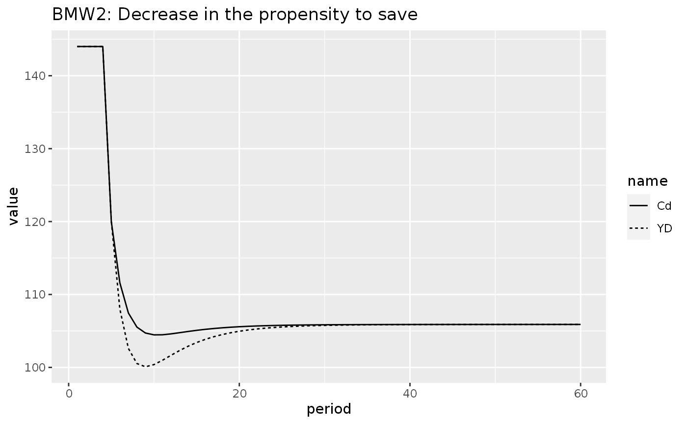 As can be seen, a decrease in the propensity to save in this model leads to a permanent decrease in consumption and on disposable income.
bmw2 %>%
do_plot(variables = c("YK"), title = "BMW2: Decrease in the propensity to save")
#> Warning: Removed 1 row(s) containing missing values (geom_path).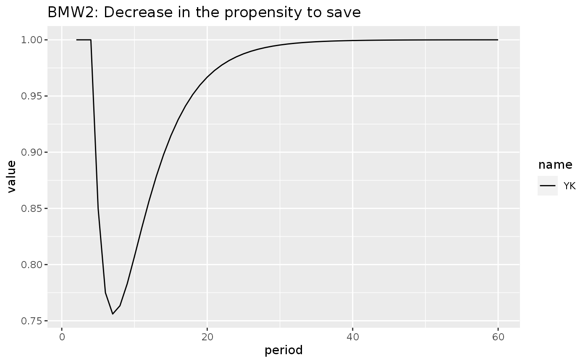 As a note, it is possible to add ggplot2 arguments to our helper function:
bmw2 %>%
do_plot(variables = c("W"), title = "BMW2: Decrease in the propensity to save") +
labs(subtitle = "Evolution of the real wage")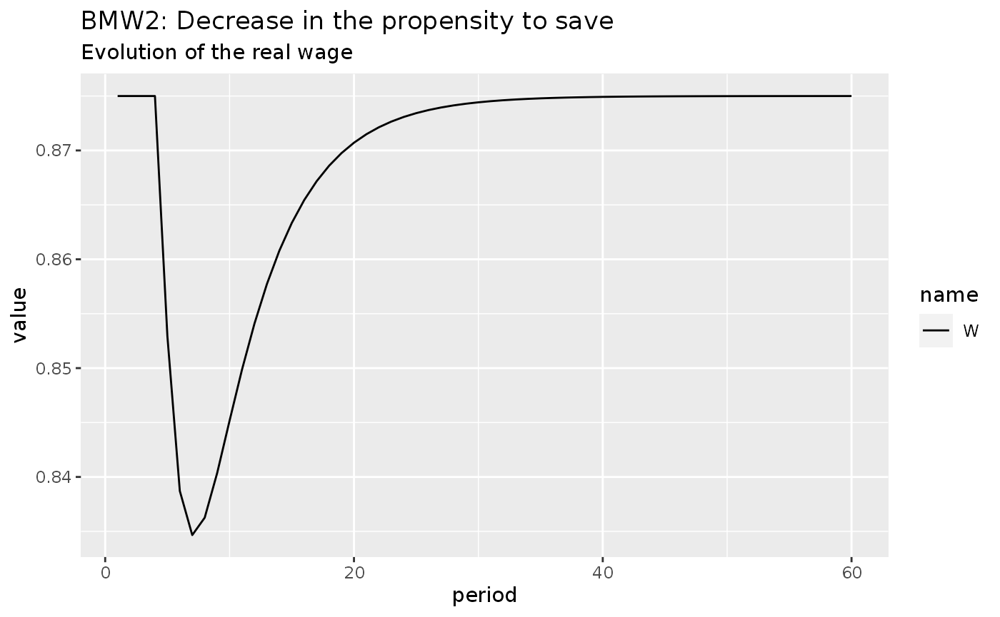
sfcr_set_index(bmw_eqs) %>%
dplyr::filter(lhs == "Cd")
#> # A tibble: 1 x 3
#> id lhs rhs
#> <int> <chr> <chr>
#> 1 16 Cd alpha0 + alpha1 * YD + alpha2 * Mh[-1]
bmwk_eqs <- sfcr_set(
bmw_eqs,
Cd ~ alpha0 + alpha1w * WBs + alpha1r * rm[-1] * Mh[-1] + alpha2 * Mh,
exclude = 16)
sfcr_set_index(bmw_external) %>%
dplyr::filter(lhs == "alpha1")
#> # A tibble: 1 x 3
#> id lhs rhs
#> <int> <chr> <chr>
#> 1 3 alpha1 0.75
bmwk_ext <- sfcr_set(
bmw_external,
alpha1w ~ 0.8,
alpha1r ~ 0.15,
exclude = 3
)
bmwk <- sfcr_baseline(equations = bmwk_eqs,
external = bmwk_ext,
periods = 100,
hidden = c("Ms" = "Mh"),
tol = 1e-20,
method = "Newton"
)
bmwk %>%
do_plot(variables = 'Y', "BMWK: Steady state")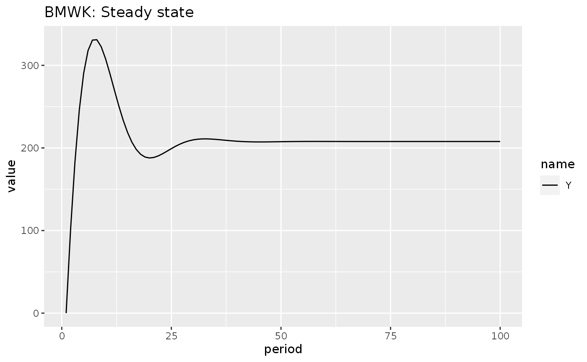
Let’s see the impact of an increase on interest rates in this model:
shock3 <- sfcr_shock(
variables = sfcr_set(rl ~ 0.035),
start = 5,
end = 100
)
bmwk1 <- sfcr_scenario(bmwk, shock3, 100, tol = 1e-10)
bmwk1 %>%
do_plot("Y", "BMWK1: Increase in the interest rate (rm)") +
labs(subtitle = "Evolution of Gross Domestic Income (Y)")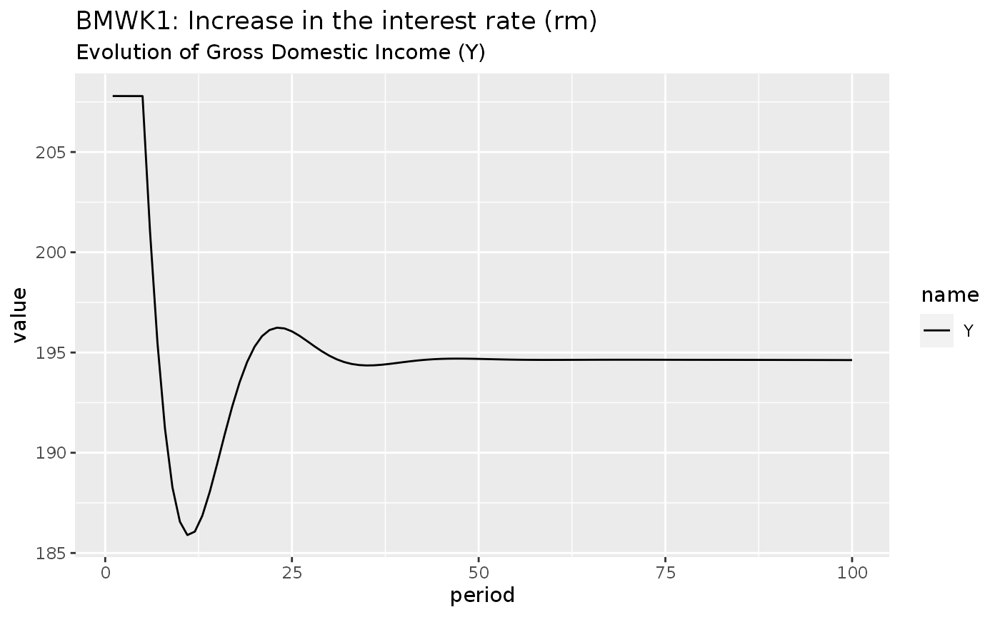
This model has a very interesting characteristic. If we don’t strive for numerical precision with a very small tol argument at the bmw model, the tiny differences in each period lead the model to explosion:
shock3 <- sfcr_shock(
variables = sfcr_set(rl ~ 0.035),
start = 5,
end = 200
)
bmwk1_explode <- sfcr_scenario(bmwk, shock3, 200, tol = 1e-5, method = "Newton")
bmwk1_explode %>%
do_plot("Y", "BMWK1_EXP: Increase in the interest rate (rm)") +
labs(subtitle = "Explosion of Gross Domestic Income (Y)")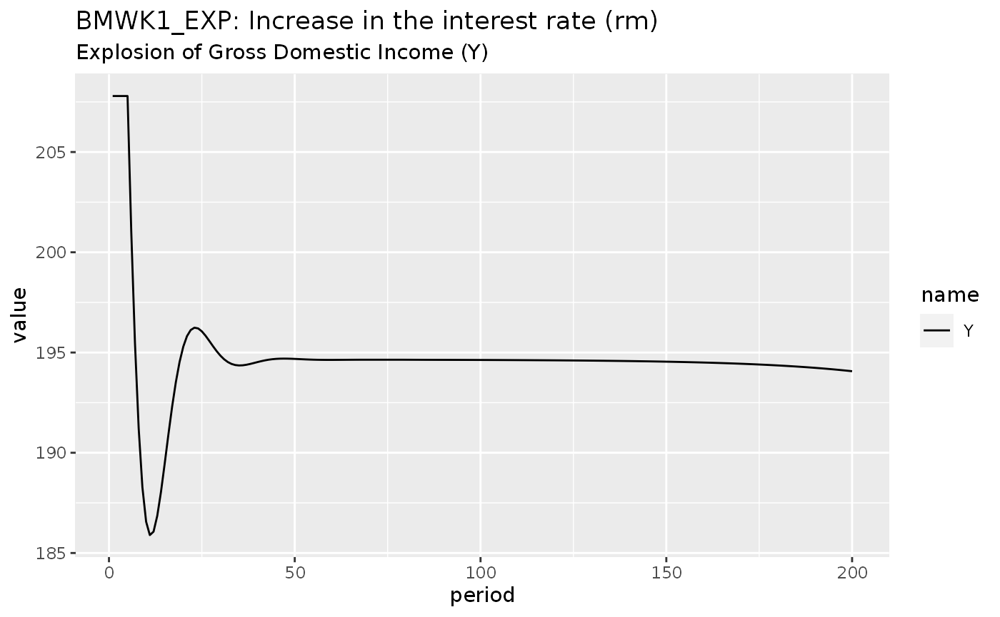
Let’s try to visualize the sensitivity of the model BMW to different parameter values, as discussed in Godley and Lavoie (2007, sec. 7.5.2)
We’ll start by expanding the values of the kappa parameter in the external set:
bmw_xext <- sfcr_expand(bmw_external, kappa, seq(1, 2.6, 0.2))
xbmw <- sfcr_multis(bmw_xext, bmw_eqs, periods = 60, method = "Newton")We can see that the model start to become very unstable from \(kappa > 1.6\):
getPalette <- grDevices::colorRampPalette(RColorBrewer::brewer.pal(8, "Dark2"))
bind_rows(xbmw[c(1, 2, 3, 4, 5)]) %>%
mutate(simulation = as_factor(simulation)) %>%
pivot_longer(cols = -c(period, simulation)) %>%
filter(name %in% c("Y", "YD", "C")) %>%
ggplot(aes(x = period, y = value, color = simulation)) +
geom_line(size = 1, alpha = 1) +
theme(legend.position = "bottom") +
scale_color_manual("kappa",
values = getPalette(20),
labels = as.character(seq(1, 2.6, 0.2))) +
facet_wrap(~ name, scales = 'free_y')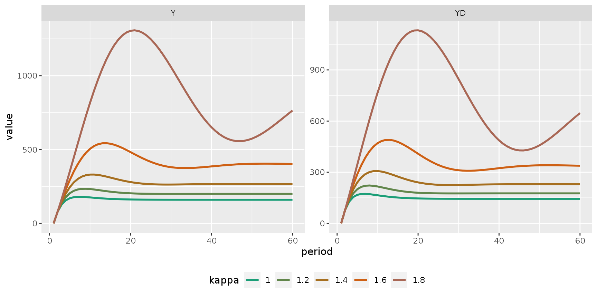